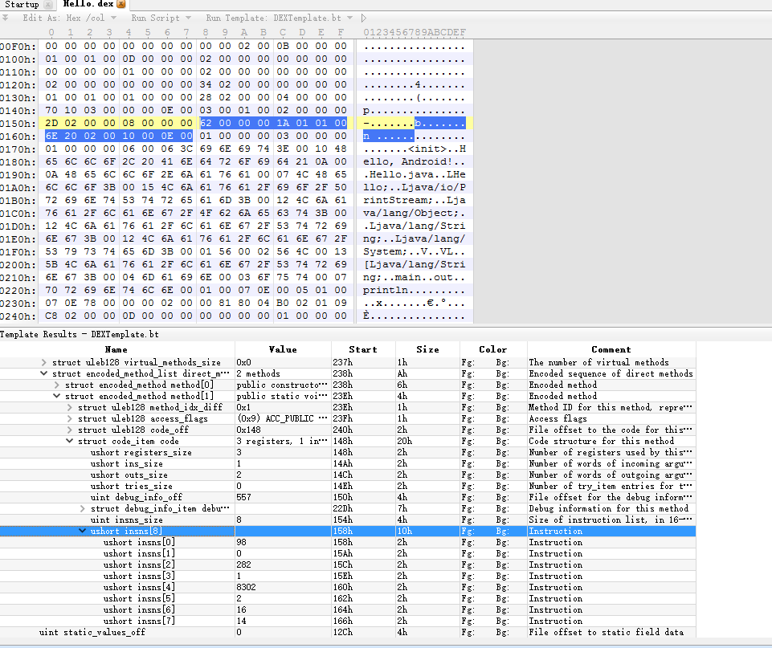
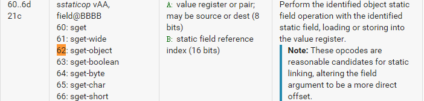
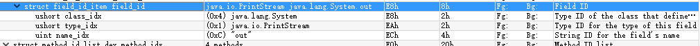
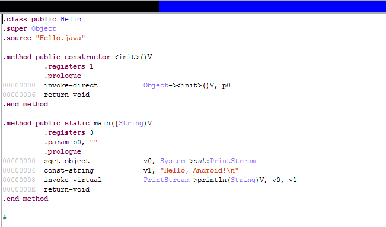
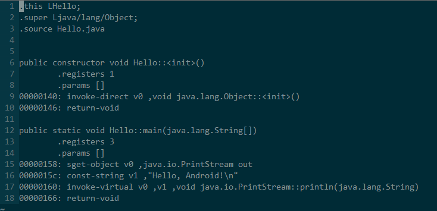

Dalvik字节码是专门为Dalvik VM设计的一种指令集。和java虚拟机不同的是，java虚拟机是基于堆栈设计的，而Dalvik虚拟机是基于寄存器的，效率要比java虚拟机快很多。在java字节码转换为dalvik字节码的过程中，方法调用栈就已经确定，其中明确的指定了使用寄存器的个数和额外的数据。Dalvik字节码能使用65536个虚拟寄存器，每个寄存器32位，以相邻的两个寄存器表示64位数据，最终所有的寄存器都会被映射到真实的物理寄存器上。
一段Dalvik字节码由一系列Dalvik指令组成，指令语法由指令的位描述与指令格式标识来决定。位描述约定如下：
每16位的字采用空格分隔开来。
每个字母表示4位，每个字母按顺序从高字节开始，排列到低字节。每4位之间可能使有竖线“|”来表示不同的内容。
顺序采用A~Z的单个大写字母作为一个4位的操作码，op表示一个8位的操作码。
“Ø”来表示这字段所有位为０值。
以指令格式“A|G|op BBBB F|E|D|C”为例：
指令中间有两个空格，每个分开的部分大小为16位，所以这条指令由三个16位的字组成。第一个16位是“A|G|op”，高8位由A与G组成，低字节由操作码op组成。第二个16位由BBBB组成，它表示一个16位的偏移值。第三个16位分别由F，E，D，C共四个4位组成，在这里它们表示寄存器参数。
单独使用位标识还无法确定一条指令，必须通过指令格式标识来指定指令的格式编码。它的约定如下：
指令格式标识大多由三个字符组成，前两个是数字，最后一个是字母。
第一个数字是表示指令有多少个16位的字组成。
第二个数字是表示指令最多使用寄存器的个数。特殊标记“r”标识使用一定范围内的寄存器。
第三个字母为类型码，表示指令用到的额外数据的类型。取值见下表。
还有一种特殊的情况是末尾可能会多出另一个字母，如果是字母 s 表示指令采用静态链接，如果是字母 i 表示指令应该被内联处理。指令格式标识的类型码如下：
| 助记符 | 位大小 | 说明 |
|---|---|---|
| b | 8 | 8位有符号立即数 |
| c | 16,32 | 常量池索引 |
| f | 16 | 接口常量（仅对静态链接格式有效） |
| h | 16 | 有符号立即数（32位或64位数的高值位，低值位为0） |
| i | 32 | 立即数，有符号整数或32位浮点数 |
| m | 16 | 方法常量（仅对静态链接格式有效） |
| n | 4 | 4位的立即数 |
| s | 16 | 短整型立即数 |
| d | 4 | 8位有符号立即数 |
| t | 8,16,32 | 跳转，分支 |
| x | 0 | 无额外数据 |
以指令格式标识 22x 为例：
第一个数字2表示指令有两个16位字组成，第二个数字2表示指令使用到2个寄存器，第三个字母x表示没有使用到额外的数据。
另外，Dalvik指令对语法做了一些说明，它约定如下：
每条指令从操作码开始，后面紧跟参数，参数个数不定，每个参数之间采用逗号分开。
每条指令的参数从指令第一部分开始，op位于低8位，高8位可以是一个8位的参数，也可以是两个4位的参数，还可以为空，如果指令超过16位，则后面部分依次作为参数。
如果参数采用“vX”的方式表示，表明它是一个寄存器，如v0,v1等。这里采用v而不用r是为了避免与基于该 虚拟机架构本身的寄存器命名产生冲突，如ARM架构寄存器命名采用r开头。
如果参数采用“#+X”的方法表示，表明它是一个常量数字。
如果参数采用“+X”的方式表示，表明它是一个相对指令的地址偏移。
如果参数采有“kind@X”的方式表示，表明它是一个常量池索引值。其中kind表示常量池类型，它可以是“string”（字符串常量池索引），“type”（类型常量池索引），“field”（字段常量池索引）或者“meth”（方法常量池索引）。
以指令 “op vAA, string@BBBB” 为例：指令用到了1个寄存器参数 vAA，并且还附加了一个字符串常量池索引 string@BBBB，其实这条指令格式代表着 const-string 指令。
上面是Dalvik的主要语法。操作码和dex文件中对应的16进制数据需要在Android开发者官网上找到：https://source.android.com/devices/tech/dalvik/dalvik-bytecode.html。
以上内容主要来自非虫《Android软件安全与逆向分析》。
实例分析
仅仅靠上面简单的介绍还无法让我们对Dalvik字节码有一个深入的认识，所以下面我们通过一个简单的dex文件来分析一下。
首先创建一个dex版的Hello World，编写java代码:
public class Hello
{
public static void main(String[] argc)
{
System.out.println("Hello, Android!\n");
}
}
然后执行:javac Hello.java
将生成的Hello.class拷贝到Android SDK/build-tools/19.0.1目录下。
执行:dx –dex –output=Hello.dex Hello.class
可以看到生成的Hello.dex。
关于dex文件格式，可以结合阅读我的另一篇文章。这里就不具体分析了，在dex文件格式分析的文章中，我们已经知道在DexCode结构体中的insns数组中存放的就是真实指令的二进制码。那么怎么才能找到这些二进制码呢，这里有一个很简单的方法:使用010editor加载dex文件，然后运行Dex文件的模板就能很清晰看到dex文件的各个数据段了。010editor在文件格式分析中运用特别广泛，特别是模板功能，能够有效的应对加密厂商对文件在文件格式上对反编译工具上做的anti。

如上图，我们可以找到main方法的字节码。因为dex文件默认是小端存储，所以字节码整理如下:
0x0062 0x0000 0x011a 0x0001
0x206e 0x0002 0x0010 0x000e
从Dalvik字节码的位描述我们可以知道首个16位数据的低8位保存的是操作码即0x62，通过查阅Dalvik bytecode文档我们可以发现对应0x62的语法结构是sget_object vAA, field@BBBB。

根据文档的描述我们可以知道，A表示的是寄存器值，B表示的是static field reference即静态数据的索引。又因为指令格式是AA|op BBBB，所以占据32位即4个字节。所以vAA=0x0,BBBB=0x0。
然后根据静态字段的table可以看到index=0的字段信息。

所以0x 0062 0000所表示的字节码就是:
sget-object v0 ,java.io.PrintStream out
同样的方法分析其余数据，就可以得到main方法的字节码。根据这一原理和网上一些开源的工具，我写了一个python版的smali反编译器:bakksmali。对比jeb可以看到效果还是很不错的。
JEB:

bakksmali:
